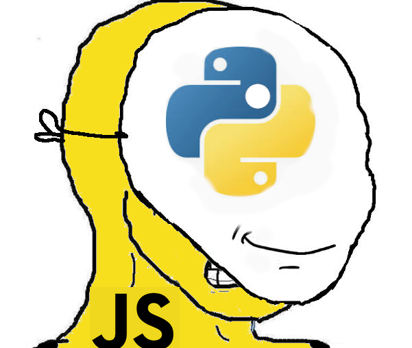

At Distributive, we had a challenge: our platform, the Distributive Compute Protocol (DCP), was built around a powerful JavaScript SDK used to manage and deploy distributed compute workload. But Python is the language of choice for many scientists, researchers, and developers in our community. They needed a Python SDK in order to use our platform so we had to build one.
The common solution would be to rewrite the SDK in Python. But that would double our maintenance burden and introduce all the usual headaches of parallel development such as version drift, duplicated bug fixes, missing features and more... So we did something very different... We embedded JavaScript in Python.
We created a dynamic, cross-language runtime that exposes the entire JavaScript SDK inside Python, automatically. The result is called Bifrost2, powered by our in-house library PythonMonkey.
We also developed the Pyodide Worktime to execute Python workloads in the browser-based compute environment. This article focuses on Bifrost2.
The core idea behind Bifrost2 is that we didn’t rewrite the DCP SDK in Python. We dynamically wrapped it.
Our JavaScript SDK, dcp-client, contains all the logic for submitting jobs, serializing workloads, and managing worker nodes.
Rather than rewrite that logic, we load the entire CommonJS module system into Python using PythonMonkey.
Then we traverse the JS module graph, convert each into a Python module, and dynamically generate classes and functions that proxy into the JavaScript world.
It looks and feels like Python. But under the hood, it’s still executing JavaScript.
We recursively walk the dcp-client's modules in JS, and dynamically initialize matching Python modules. We even convert names like dcp-client/compute into Python's dcp.compute, creating real submodules and populating them with functions and classes.
Using dynamic class factories, we generate Python classes that proxy JavaScript classes, wrapping their constructors and methods to provide a natural Python interface. These wrappers proxy all method calls to the underlying JS objects, translate return values back into Python, and expose async methods through a .aio namespace for Python async/await compatibility.
This is all dynamic. I didn’t write the wrappers manually — they are generated at runtime by inspecting the JavaScript objects via SpiderMonkey.
The JS SDK uses a method called compute.for. That works great in JS.
from dcp import compute
compute.for(...) # SyntaxError
Oops...
As for is a reserved keyword, we had to introduce alternative accessors (like compute_for) to avoid syntax collisions with Python keywords.
new in PythonJavaScript classes must be instantiated with new, or this will be incorrectly bound. But Python has no new keyword, and worse, you can’t even tell in JS whether a function is a constructor or not. Our solution? We duck-type the function prototype and use new if it smells like a class. If we guess wrong, we fail fast and wrap it better next time. It’s not elegant, but it works. Mostly.
At the end we're left with a very usable Pythonic API:
Here's an example of deploying a squaring function across the dcp network...
import dcp
dcp.init()
def workfn(x):
dcp.progress()
return x * x
# distributed number squaring!
# not the most efficient use of parallelism over network per se... (-:
job = dcp.compute_for([1, 2, 3], workfn)
job.exec()
# results: [1, 4, 9]
print(job.wait())
This is a Pythonic API, but every bit of it — from compute_for to job.exec() — is actually running logic from the JavaScript dcp-client. The job serialization, networking, result handling, and even error propagation all pass through SpiderMonkey.
Behind the scenes, compute_for is dynamically generated. It pulls in the JS Job class, wraps it with Python class factories, and exposes it like any other Python object.
And if you want to use await instead of blocking calls? Just use .aio:
await job.aio.exec()
We built Bifrost2 because we didn’t want to maintain two SDKs. But we also wanted to enable Python developers to access DCP with no compromises.
And now, with Bifrost2, Python devs get:
And we get:
Bifrost2 is one of the most cursed and magical projects I’ve worked on. It stretches what Python can do and what JavaScript runtimes are capable of. It lets us keep one codebase, support two ecosystems, and build wild things.
At the heart of it all is PythonMonkey, our embedded JavaScript runtime for Python. It’s what makes this entire architecture possible — bridging two languages with fundamentally different runtimes and expectations, and doing so with speed and flexibility. If you're interested in using NPM packages from Python or exposing Python APIs to JavaScript, PythonMonkey opens a lot of doors.
Of course, managing Python-JS interop also meant we needed to run Python code on the web-browser based DCP compute infrastructure too — for that, we created the Pyodide Worktime, a different but equally epic solution which allows native Python code to be distributed and executed in the browser.